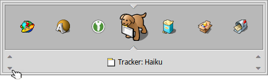

Twitcher (Перемикач програм)
Twitcher – це перемикач задач для переходу між запущеними програмами та їхніми вікнами.
Утримуючи клавішу CTRL, натисніть TAB, щоб переключитися між поточною і останньою програмою/вікном у поточній робочій області. Швидке натискання TAB переключатиме між усіма видимими програмами у поточній робочій області.
Натисніть і утримуйте клавіші CTRL TAB, щоб відкрити вікно Twitcher в якому відобразяться значки усіх запущених програм. Поповторно натискаючи клавішу TAB або ←/→, Ви можете переходити вд однієї до іншої або переключитися на вибрану програму.
Якщо Вам потрібно перейти до конкретного вікна програми, перейдіть до її значка, як описано вище, а потім перебирайте відкриті вікна за допомогою клавіш ↑/↓.
Ви циклічно переходите між усіма видимими вікнами (у поточній робочій області) програм за допомогою клавіш CTRL ~ (залежно від розкладки клавіатури, яку Ви використовуєте, це клавіша, що знаходиться нижче ESC).
Крім того, можна викликати Twitcher натиснувши клівіші CTRL TAB а потім за допомогою миші вибрати програму/вікно до якого Ви перейдете, відпустивши клавішу CTRL.
Twitcher також пропонує кілька додаткових клавіш до основної комбінації:
| ESC | Припиняє процес переходу між програмами і повертає до попереднього активного вікна. | |
| Q | Завершує роботу вибраної програми. | |
| H | Приховує всі вікна вибраної програми. |